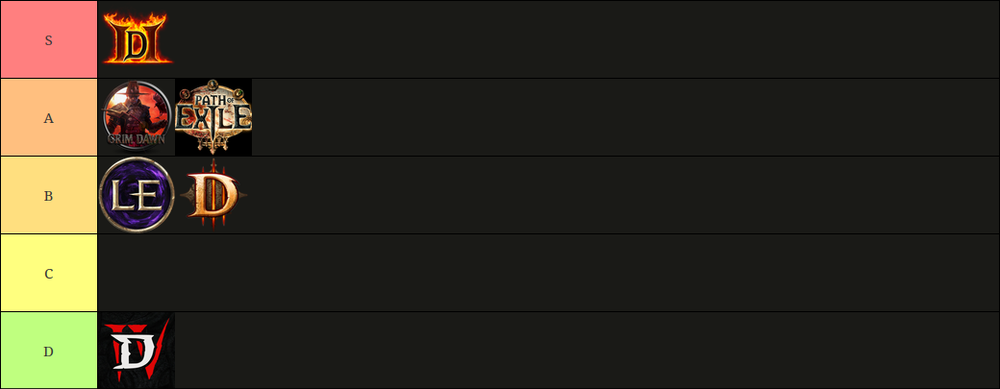

ARPG Manifesto
ARPG, or action role-playing game, are isometric hack-n-slash looters like the Diablo series.

What follows is an old man, shakes fist at the sky rant about how ARPGs nowadays miss the point and the older games were better.
In my time on this earth, I've played a handful of Diablo-like games: Diablo 2, 3 and 4, Grim Dawn, Path of Exile, Last Epoch. I've even enjoyed loosely related games like Borderlands, Vampire Survivors, heck even Hades can be considered an ARPG. It's a genre I really love for three reasons: the in-depth build-making that feels like fine-tuning an engine while you play, the looting of unique items that completely change your game plan, and the satisfying progression of mowing down of hordes of monsters in fast-paced gameplay.
Unfortunately for me, not all is sunshine and roses in ARPG-land. My favorite game in the genre remains Diablo 2, because of all the games I've played, none has come as close to the ideal ARPG as the one that set the standard at the turn of the millennium. In fact, modern iterations on the genre have strayed further and further from what made the original good in favor of "catering to what people want", which is games-as-a-service endless seasonal grind. It's in direct opposition of what I love most about these games, the journey of making a build that works and tinkering to make it better.
Before I dive headlong into each ARPG I've played, let's talk about some general points related to most if not all of them.
In General
Campaign vs. Endgame
The core of my gripe against modern ARPGs, they all focus entirely on the "endgame", which is a cancerous growth of infinite game mechanics subsuming the campaign. It's also what every player in every community will call the REAL game, and if you've only invested 30 hours in the campaign you haven't seen the REAL game. I have 217 hours in Path of Exile, but I guess I've really never played the game cuz I never made it past tier 4 maps (and all mapping represents 1% of my playtime). If only I'd played the REAL game and grinded the RIGHT systems, I'd be enjoying myself instead of whatever fake happiness I felt playing the campaign.
The majority, in fact the entirety of online discourse revolves around the endgame. Around the best items, the most godlike builds, the fastest Uber clear times, tier 17 map farming, and everything that the average player will never see in their lifetime.
J1mmy said it best while talking about World of Warcraft.
The Community
All those Youtube videos titled "Ultimate Maven farming build | shroud Necro 300% AS" have a viewership that'll nod along like "this build looks great", even though 99% of those viewers will never even see the boots the build is using, let alone reach the Maven. It's almost a voyeur's hobby, of looking at these insane builds and dreaming about how cool it would be to have it yourself, disregarding the 1000 hours of playtime on one character in one season that would require. It gives a dream to chase after, and that's ok. What's not ok is that every. freakin. guide. is like this. When everybody's dreaming, where's the truth? Picture this: you find a guide for a cool build, and the guide says "getting this build online takes medium effort". What's medium effort? Could be 200 hours of grinding, or maybe it's 10 hours of grinding. There's no sense of scale, and few touchstones to compare the build to without already being so deep in the sauce you've probably already grinded 200 hours.
But you know what grinds my gears more than anything. Every freakin' guide for a cool build, every single one, has a one-line disclaimer somewhere in the intro that says "This build comes online at level 60. Use earthshatter to level efficiently". Do I have to describe everything wrong with this statement? Yes, yes I do. Even for the most experienced grinder and altaholic using all the twink gear in the game (twink gear being rare/high-level drops that can be used by lvl 1 characters and make leveling much smoother), clearing the campaign will take you easily 8 hours. For most players who aren't tweaking on cocaine while they play, it's more like 15 to 30 hours. So what that statement is saying is, don't play this cool build until you've played 15 to 30 hours of the most cookie-cutter, mind-numbing build you can imagine, then you can play this build. On top of that, you can invest all that time only to find out you don't like the build! If you follow these guides as written, you won't even touch the build until the end of the campaign, or far into the endgame. I've personally had to find out the hard way (twice cuz I'm an idiot) that sometimes the builds just feel janky to play despite how cool they look. In a game like PoE where respeccing costs valuable, limited resources, that means you're basically borked and it's time to scrap and restart. Perhaps most insidious of all, however, is the fact that this statement, and this situation, is a product of the dev's design choices. These builds only exist in the endgame because the items and the skills needed to enable them only exist in the endgame. There's no low or mid level, sorta-good items that can kinda make it work and would allow you to level with the build. It's all or nothing, and as such, the community reacts by creating build guides revolving around leveling the most efficient way till you can play the fun lategame builds. It's a real shame, and it reflects
There are some blessed "dad-friendly" build guides out there, and I praise their efforts, but they are literally one in a thousand. Their channels are often hard to find, as they aren't linked to from the icyveins and maxrolls of this world.
The Complexity
It's so easy to bash on Path of Exile for this, but honestly every ARPG does it to an extent that's unhealthy: the endgame cancerous growth and endless cycle of updates creates an unpenetrable miasma of game terminology and systems that requires an essay complete with pictures in order to begin to grasp it. Let's illustrate this with an example from PoE:
{kind=link}
In the endgame you can engage in mapping, bossing, heisting, labyrinths, delving, synthesis, simulacrum, blight, uber blight, betrayal, sanctum, bestiary, kirac missions, crafting, trading, incursions and of course the league mechanics (delirium, legion, harvest, abyss, expedition, ritual, settlers, ultimatum, harbinger, affliction, beyond, domination, anarchy, sentinel, tormented spirits, mercenaries, essenzen, whatever).
Any one of these systems requires either a PhD, an essay-length guide, or 10s of hours of playtime to really start learning it. Mapping should be the beginner-friendly, entry point system that all Path of Exile players must interact with. Maps go from tier 1 to 17, but there's also white/yellow/red maps which are the same things as tiers but kinda tiers of tiers for some reason. You get red maps by corrupting and alching regular maps, and you'll need yellow then red maps in order to progress past the first few tiers so you can get the 4 voidstones and do the Maven invitations so you can do the tenbossinvitationssoyoucangetyour5thmapslotandthenkilltheEater,ExarchandUberElderanddontforgettodoyour4thlabsomewherearoundT6mapsanddidImentionyoushouldkillBlackStarandInfiniteHungerAnywaysbynowyoushouldbereadyfortier16mapssogrindmoregearyou'vebeengrindingrightthebasechanceforshapermapsislike3%sogetyourbigboypantsoncuzyoullneed4ofthoseatleastsoyoucanrepeatedlygrindtheshaperforhalftheuberelderfragmentsyouneedthendoitagainwiththeelder-waitIhaventtalkedaboutsynthesismapsyetsoyoucanfightᵥₑₙₐᵣᵢᵤₛₒᵣₜₕₑᵦᵣₑₐ𝒸ₕₗₒᵣ𝒹ₛ...
Or, consult this handy-dandy chart.
{kind=link}
"But Simon" you plead, "Path of Exile is the most complicated game in the genre! Surely this is a strawman argument you thought up in a fever dream." Good eye reader, and I won't let your nasally complaint distract me from my crusade. Instead, let's turn our attention to Diablo 4, often ridiculed for its braindead simplicity, among other things. Here's a screenshot of an excel table of the resources you'll need to farm and where to farm them. That should tell you all you need to know.
{kind=link}
Now remember, for all intents and purposes, the endgame is the game. All these systems and mechanics are what you're meant to interact with, not that measly abortion of a campaign. As the playerbase'll tell you, having all these mechanics is a good thing, right? Well, normally I'd say yes, agree with you that more content is a Good Thing™ and we'd all move on. Unfortunately, ARPG devs are allergic to tutorials or really any kind of guidance. Instead you get "here's the endgame, try maps, have fun!" and are thrown in the deep end. So you either drop out before you start or turn to the online community and get sucked in to their top leveling builds, efficient map fragment routes and max rune farming spots. Before long you're another cog in the machine.
Let's move on to look at the games, but before we do, a tierlist:

Diablo 2
Ahhh my sweet baby, you who can do no wrong. No rose-tinted glasses here, I played the Diablo 2 remaster in 2023 and what I found was an endlessly replayable, lean, mean campaign complete with a roster of unique characters. Being an old-ass game, there weren't any cool combat mechanics outside of move and hit, but damn if they didn't make that satisfying. The movespeed is just right, starting you off a bit slow and speeding you up considerably as you accumulate levels and items. The bosses are cool and easy to farm. The enemies are just dangerous enough. The maps are big but not too big, and their environments and music hit just right. Heck, you just have to look at how the campaign is designed to be played 3 times on Normal, Nightmare and Hell to know that the devs designed the game to be replayable, and replayable it is. There's no bloated cutscenes, fetch quests or boring animations to slow you down here. Everything is action and zooming around maps right from the get-go. They even added a sprinkle (note: a SPRINKLE) of endgame in the form of Ubers for those players thirsty for more, though replaying the campaign endlessly on different builds is satisfying enough for most players, especially since Hell difficulty is actually hard and requires the right amount of prep.
My one gripe with the game is the drop rate of loot: it's ridiculously low. Grinding is one thing, but you can run the same boss 1000 times without seeing an item. This isn't hyperbole, there's youtube vids of Diablo 2 boss farming marathons that show just that. I even played one run with a mod increasing drop rates by 100x, and guess what, I got a few interesting uniques but honestly not much. I understand that the extreme rarity of these items makes every drop feel super important, I really do. And it promotes trade between players and fosters a sense of community (ignoring trading sites). But the game could use a solo self-found mode with drop rates adjusted for the guy who doesn't want to run the same boss 3000 times.
Other than this one gripe, Diablo 2 remains my baby. The poster child for a good ARPG. Easy to get into, doesn't break up the action, focuses on a replayable campaign, tons of builds and cool stories.
Diablo 3
The black sheep of the series, Diablo 3 shed the gritty grimdark grime of D2 for a WoW-esque cartoony aesthetic, with gameplay to match. This shift was too much for a lot of players, who took to message boards to complain loudly for years. However, in my humble opinion, it was D3's saving grace. Certainly, the progression systems, the campaign's pacing, and shudder the endgame were already well on the way to becoming the horror that is Diablo 4. So if the gameplay and the tone was the same as D2, the comparison between the two would've been stark and unforgiving for this younger sibling. At least this way, Diablo 3 stood its own ground and created a game that's fun to play. (Editor's note: I'm talking about post-Reaper of Souls D3, not launch day D3 which I did play and was pretty meh). Most notably, it actually has cool items you can pick up during the campaign that change your playstyle. Wow! What a novel concept! I sure hope those Blizzard devs bring good ideas like that into their next game.
Grim Dawn
Ah Grim Dawn, my sweet summer child. Here's a game released in the vicinity of this decade that sticks to Diablo 2's idea of a replayable campaign, eschewing the horror of the endgame monstrosity for clean, simple fun. On top of that it has cool skills, varied builds and strong class identity. Its setting and campaign pacing are a bit weaker than D2's, but otherwise it's the game that flew closest to the sun. So why do I rank it equal to Path of Exile, a game I have a hundred complaints about? One reason: Grim Dawn does not avoid the cursed crafting subsystem. I try to ignore these in every game I play, but in this one it's required to progress in Hell difficulty. You have to grind a pyramid of resources so that you can craft a ribbon to put on your pants that gives you the resistance stats you need to not get oneshot by spiders at the start of Act 1 Hell. And that sucks. Honestly if the grind was for better gear, especially gear that drops from bosses on Nightmare, I'd have been willing to do it. But an obscure, boring, completely artificial crafting system that requires you to load up a wiki guide to complete 27 steps for each component made me nope right out. I ended up modding the components into my game, that's how little I wanted to do it. It was more fun to look up how to mod a .ini file using a 3rd party software than it was to actually play the game.
Path of Exile
PoE is called by fans the epitome of the modern ARPG, and for me it is the epitome of everything wrong with the genre.
It boasts a skill system that's so vast memes are made about it. You can make dozens of builds, each viable enough to engage with the game's endgame content in differing ways. Raining firestorms and meteorites? Easy, it's got that. Summon totems that cast those same firestorms? It's got that. 10,000hp and piles of armor? It's got that. 1hp but tons of shields? You bet it's got that. Though to go against my point, sometimes simple builds I really wanted to play, like guy who attacks fast with axes or thief dual wielding daggers or bow lady that shoots lots of arrows, were so niche as to be kinda bad or required items that were so prohibitively expensive/rare as to be unplayable. In a strange quirk of the massive build viability, weird and non-archetypal builds have taken the forefront of the meta, leaving regular ol' playstyles in the dust. For the most part, anyways.
As with Grim Dawn, PoE suffers from over-complicated-itis. Anyone who's played it can tell you there's a big learning curve, sure. I don't mind tackling systems like armor vs. evasion vs. energy shield; block chance vs. spell suppression; mana reservation and cast-on-x modifiers. I'm even ok with crafting, even if it isn't my jam. But then you get unique jewels that add esoteric, unknowable effects, e.g. Lethal Pride jewel: "Commanded leadership over (10000-18000) warriors under (Akoya-Kaom-Rakiata). Passives in the radius are conquered by the karui. Historic." That's it. That's the whole description. A real Ring of Gwanja moment.
PoE also commits the cardinal sin of making uniques trash. By the dev's own design, uniques are meant to provide build-enabling effects, but aren't supposed to be better than rares. In fact, they're plain worse in every way. No unique acquirable in the campaign is worth anything, you'll need to be lvl 60+ before you start seeing drops worth a damn and even then, best you can do is trade them to other players for pennies. To put in into perspective, glass baubles you need five of in order to upgrade your life flask are worth ten times more than 99% of uniques you'll find. To add insult to injury, the game does the big sound effect and cool VFX when a unique drops, which would get you excited if you didn't know it's worthless before even looking at it. The final nail in the coffin is that like in Grim Dawn, uniques don't drop from bosses (before some endgame map bosses that 95% of players won't see anyways). They drop from any mob in the world, removing the fun of target farming a boss for their uniques while leveling your character.
About those bosses that 95% of players won't see, what's up with that? It's like these devs saw Diablo 2 make Uber bosses as this super-late-game milestone for the most invested players and thought "hey what if we do that, but instead of making the Ubers juiced-up variants of regular bosses, we just put all the cool bosses at the end of an endless treadmill!" Great idea devs. I'm very confident when I saw the majority of PoE players haven't even smelled a whiff of the Uber Elder.
Last Epoch
Finally a breath of fresh air, though really it's a slightly less rancid breath of sewer air that's comparatively fresher after being submerged in filthy water for days. Last Epoch's team of indie devs aimed to strike a balance between modern Diablo's simplicity and Path of Exile's complexity, and they achieved their goal. The only problem is that in the process they adopted the same modern approach as PoE and D4, with a treadmill endgame experience. In its favour, most builds are playable during the campaign, and the devs implemented a great solo self-found system that can increase loot drops up to 200% and let you target farm pieces. It's a shining example of learning from your betters, and if it weren't for a lack of content (the campaign's only ~70% done) and some jankiness stemming from inexperienced devs, I'd rank it higher than PoE.
Diablo 4
Look where all these poor design decisions have brought us. How low you've fallen from your peak, how tortuously the trade-off of enjoyment for engagement has wounded you little by little until you can barely stand under the weight of your mistakes. Look how they massacred my boy. (And I still gave it a 7/10 instead of the 4/10 it deserved because I like killing monsters that much.)
Conclusion
I dream of the ideal ARPG, one with dozens if not hundreds of uniques that enable hundreds more builds, dropping at every range of rarity known to man. One which treats grinding as part of the game, as so creates purposeful, enjoyable gameplay loops around it. One that rewards time invested with amazing horizontal progression. One that doesn't balance around only the most desperately online players, instead making space for casuals and busy dad schedules. One that offers all kinds of sick looking gear not blocked behind a cash shop, and finally one that holds secrets waiting for explorers to find them without needing a PhD in statistics and branching logic.
I don't expect the formula to change, as clearly it makes money and attracts and keeps players invested. And so, I will continue feeling an agonizing mixture of love and despair towards this genre that's so fun yet bloated by the cancerous growth of greed. Hey, maybe Titan Quest 2 will be better, there's always hopium.